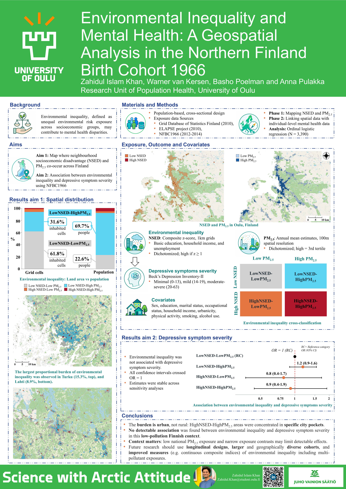
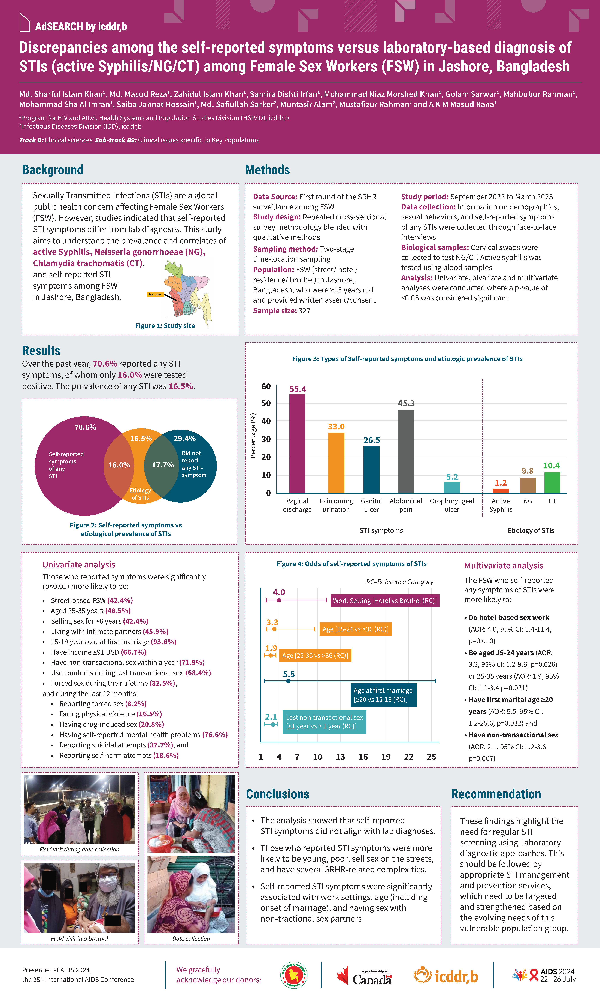

Zahidul
.
Khan
☰
Home
About
Research
Conferences
Experience
Volunteering
Interests
Travel
Contact
conferences
Conference
presentations

add poster
10–12 June 2026
Environmental Inequality and Mental Health: A Geospatial Analysis in the Northern Finland Birth Cohort 1966
6th Paula Rantakallio Symposium on Birth Cohorts and Longitudinal Studies · Oulu, Finland
author
poster
2026
2024

add poster
22–26 July 2024
Discrepancies among self-reported symptoms vs laboratory-based diagnosis of STIs among female sex workers in Jashore, Bangladesh
25th International AIDS Conference · Munich, Germany
co-author
poster
01–04 July 2022
Factors affecting depression and stress among tertiary level students during the COVID-19 pandemic
International Conference on STEM & the 4th Industrial Revolution · Khulna University
co-author
oral
2022
✕